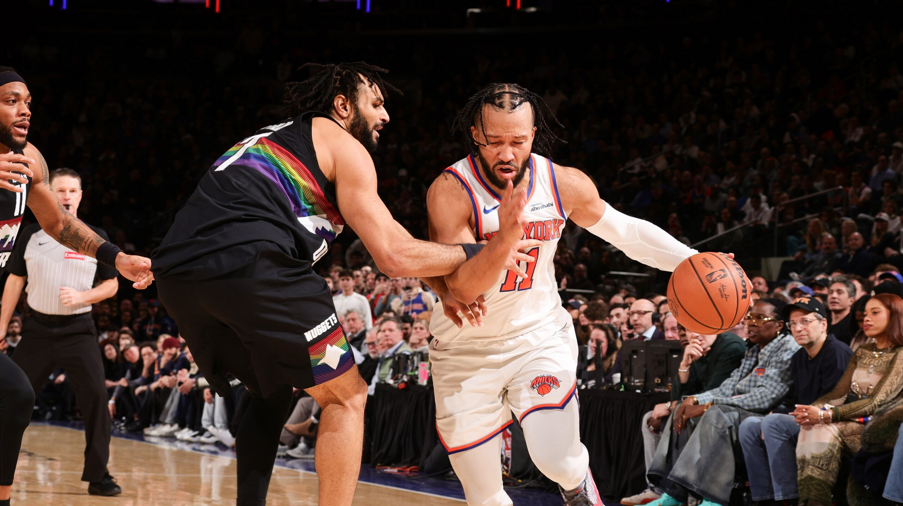
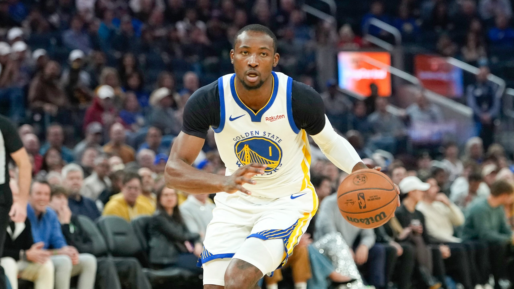
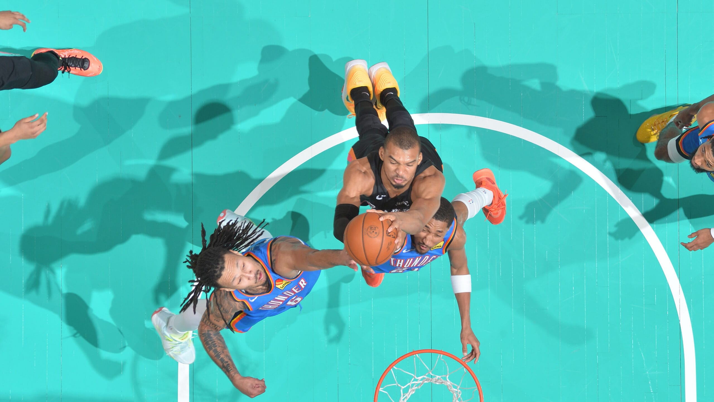
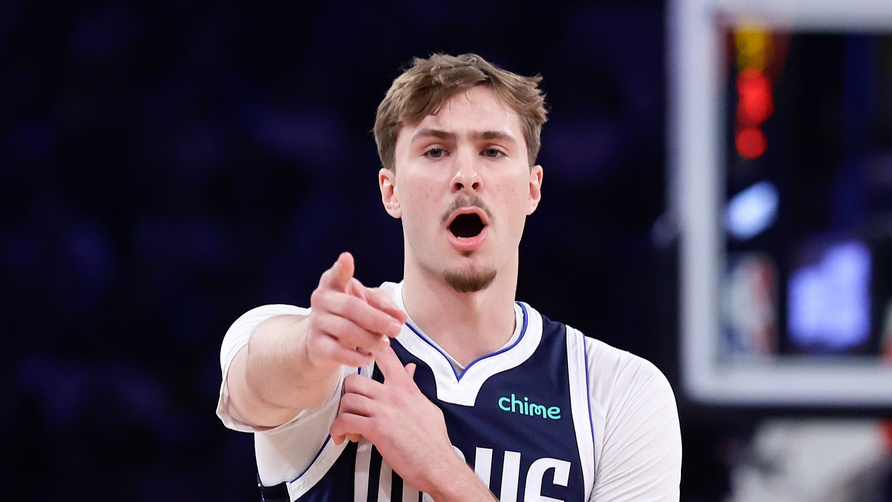
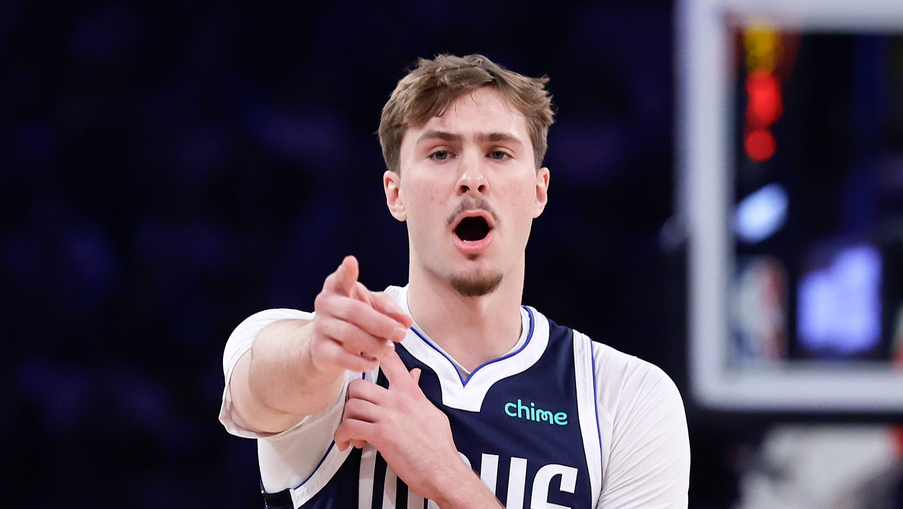
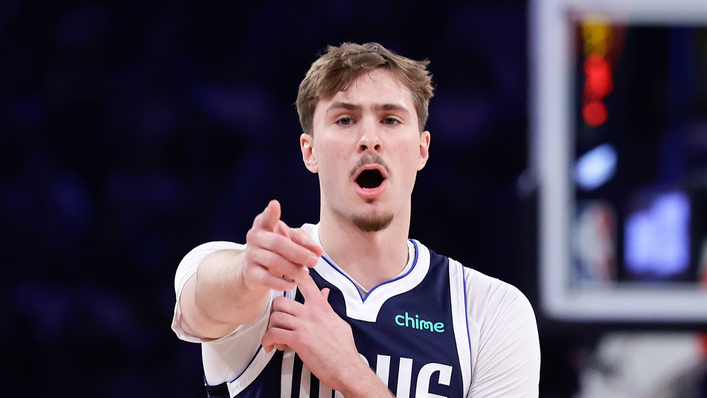

 

Every reported trade before Thursday's deadline
Keep track of the latest reported deals before the 2026 NBA Trade Deadline on Thursday at 3 p.m. ET.
Reports: Davis traded to Wizards in 8-player swap
The 10-time All-Star is reportedly heading to Washington -- along with 3 other players -- for 4 players and 5 picks.
Kia Rookie Ladder: Flagg again stands at the summit
Cooper Flagg's surge has him back at No. 1 as changes are afoot in the Top 10 of the latest Kia Rookie Ladder.
Next: Knicks outlast Nuggets in 2OT for 8th straight win
Next: Every reported trade before Thursday's deadline
Next: Wemby, Johnson guide Spurs past depleted Thunder
Next: Reports: Davis traded to Wizards in 8-player swap
Next: Kia Rookie Ladder: Flagg again stands at the summit
Stories
Headlines
NBA Trade Deadline: Latest reports before Thursday
Report: Kuminga, Hield traded for Porziņģis
Reports: Mavericks trade Davis to Wizards
Celtics ground Rockets for 4th win in row
Westbrook moves to 14th on scoring list
Murphy III sets Pels record with 12 3PM
Now a Clipper, Garland eyes 'next chapter'
Report: Veteran Chris Paul dealt to Raptors
SGA (abdominal strain) set to miss time
Reports: Hornets add White in Bulls deal
Kia Rookie Ladder: Flagg returns to No. 1
Harden traded to Cavs for Garland, pick
2026 NBA All-Star Reserves
2025-26 Game Recaps
AROUND THE NBA


Headlines
NBA Trade Deadline: Latest reports before Thursday
Report: Kuminga, Hield traded for Porziņģis
Reports: Mavericks trade Davis to Wizards
Celtics ground Rockets for 4th win in row
Westbrook moves to 14th on scoring list
Murphy III sets Pels record with 12 3PM
Now a Clipper, Garland eyes 'next chapter'
Report: Veteran Chris Paul dealt to Raptors
SGA (abdominal strain) set to miss time
Reports: Hornets add White in Bulls deal
Kia Rookie Ladder: Flagg returns to No. 1
Harden traded to Cavs for Garland, pick